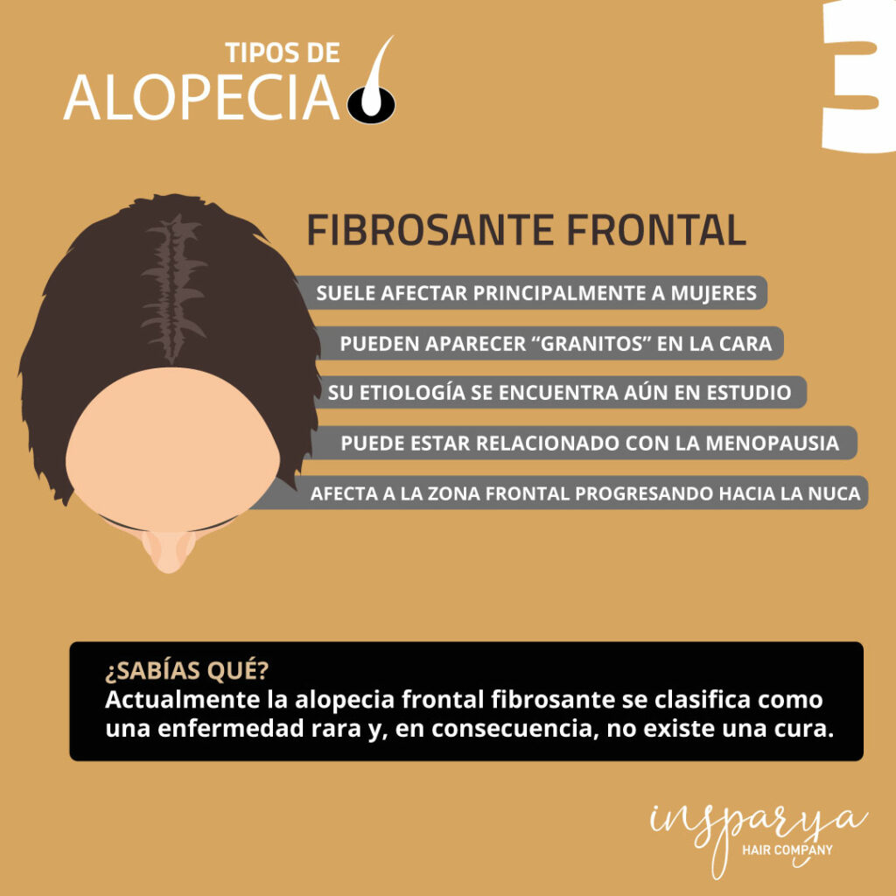

Tipos de alopecia
¿Qué es la alopecia?
Todo el mundo conoce el término de calvicie cuyo significado implica la pérdida de cabello, pero la forma más correcta de denominar esta enfermedad es: alopecia.
Aunque es cierto que suele afectar a mayor número de varones que de mujeres, se trata de una enfermedad que afecta a ambos géneros provocando graves cambios en la autoestima e inseguridad en una persona.
Cuando la caída de cabello supera los 100 cabellos al día ya se puede hablar de alopecia ya que cada uno de nosotros perdemos entre 50 y 90 cabellos al día. Esa pérdida, no solo afecta a la cabeza como ya sabemos, sino también se ha demostrado que puede llegar a afectar otras zonas como:
Aunque sean zonas menos visuales que la propia cabeza, el problema también se puede dar, y muchas personas lo sufren actualmente. 
Es un problema médico muy frecuente que sufren muchas personas en el mundo. Va más allá de una cuestión meramente estética, considerada enfermedad por la OMS (Organización Mundial de la Salud).
La alopecia no tiene una única causa y tampoco tiene una única forma de dar la cara, sino que existen diferentes tipos. Las causas de tener alopecia pueden ser muy diversas: desde aspectos genéticos, malos hábitos en nuestra alimentación, hasta sufrir estrés habitualmente. Algunos problemas de alopecia se podrán resolver mejorando nuestra calidad de vida, pero con otros será preciso realizarse un trasplante o tratamiento capilar.
¿Qué tipos de alopecia existen?
De forma reconocida existen hasta 6 tipos de alopecia, que son: Androgenética, Areata,  Fibrosante, Difusa, Cicatricial y Universal.
- La alopecia androgénica, también llamada calvicie común, es la más frecuente. Este tipo de calvicie se suele presentar a partir de los 50 años en mayor o menor medida. En torno al 50% de los varones y al 10% en el caso de las mujeres la padecen. El origen es principalmente genético, aunque también puede ser hormonal. Este origen genético se atribuía originalmente a la genética materna, sin embargo, se ha demostrado que es impredecible, ya que los genes no se heredan en proporciones exactas y son una combinación de diferentes familiares, es decir, una herencia poligénica. En el caso del componente hormonal se produce un fenómeno en el cual las hormonas masculinas o andrógenos  actúan sobre los folículos pilosos predispuestos genéticamente a la afección provocando, progresivamente, una atrofia de los mismos hasta la desaparición completa del cabello. En el caso femenino, la pérdida de cabello es difusa ya que no llega a perderse todo el cabello y no existen las denominadas ‘entradas’.
- La alopecia areata es el segundo tipo de alopecia más común. Se trata de un tipo de caída que se origina parcialmente en forma de parches, aunque puede extenderse al total del cuero cabelludo o, incluso, al resto del cuerpo. Lo normal es que este tipo de alopecia desaparezca y vuelva a crecer el cabello, pudiendo volver a aparecer estos parches en una futura recaída.  Es una afección que suele estar relacionada, además del componente genético, a enfermedades autoinmunes como la celiaquía, la diabetes o la artritis.
- La alopecia fibrosante, más conocida como alopecia frontal suele afectar a mayor número de mujeres que de hombres. Este tipo de alopecia plantea muchas incógnitas y sus causas son aún bastante desconocidas. Lo que sí se sabe es que puede estar relacionada con la menopausia. La alopecia fibrosante afecta, principalmente, a la zona del inicio frontal del cabello creciendo éste cada vez más atrás.
- La alopecia difusa es un tipo de caída reversible. Puede ser más o menos intensa pero corresponde a una porción del cuero cabelludo donde desaparece el pelo.
- La alopecia cicatricial, como su propio nombre indica, pertenece a aquel tipo de caída o desaparición de cabello producida por una cicatriz. En este caso, debido a una herida se ha producido una destrucción de los folículos pilosos que impide la nueva aparición de pelo en la zona.
- La alopecia universal, produce una calvicie debido a una enfermedad autoinmune que ‘ataca’ a los folículos pilosos impidiendo que pueda generarse cabello. En este tipo de alopecia los anticuerpos del paciente agreden al folículo piloso eliminándolo por completo. Es importante aclarar que la alopecia universal es un subtipo de la alopecia areata, solamente se diferencia en que se muestra de una forma más agresiva.
¿Por qué realizarse un trasplante capilar es la mejor forma de enfrentar la alopecia?
La alopecia no la podemos elegir, pero ponerle remedio sí. Los motivos para animarse a dar el salto son variados (y no solo por razones estéticas que ya todos conocemos). Contar con cabello en nuestra cabeza nos servirá para protegernos de las inclemencias climatológicas como el viento, la lluvia o el sol. Una exposición prolongada puede dañar nuestra piel, incluso, en el peor de los casos sufrir quemaduras, manchas o cáncer de piel si el sol incide directamente.
Causas de alopecia más allá de la genética
Múltiples pueden ser las razones de sufrir alopecia, actuando una o varias a la vez. Debemos tener en cuenta que la razón número 1 que nos vamos a encontrar es la temida genética (según veamos a nuestro padre podremos hacernos una idea aproximada de lo que nos puede deparar el futuro). 
Pero esta razón no es la única, podemos sufrir alopecia debido a otras causas como son:
- Alopecia nerviosa. Aquella que nos afecta cuando pasamos por momentos de altos niveles de estrés, pudiendo ser agudos o crónicos.
- Alopecia por tracción/traumática. Hace referencia a la caída del cabello debido a usar looks que estiren y aprieten el cabello, como las habituales coletas , moños, etc. Aunque también los cascos, gorras, etc pueden no ser beneficiosos si se abusa de su uso.
- Dermatitis seborreica. Esta causa puede tener un factor genético pero también puede verse afectada por los nervios, malos hábitos alimenticios, etc.
Alopecia femenina
La alopecia está muy asociada a los varones y a veces olvidamos que las mujeres también la padecen, aunque en menor número. En muchos casos ellas sobrellevan peor esta enfermedad por las connotaciones sociales que las rodean. 
También es importante comprender que, por regla general, la alopecia femenina se muestra diferente a la del hombre. Tanto es así que tienen escalas diferentes, en el caso de la mujer es denominada como escala Ludwig, mientras que en la del hombre se denomina Hamilton-Norwood.
En el caso de las mujeres los tipos de alopecia más habituales son: la androgenética, areata y fibrosante frontal. Y a parte de las causas comentadas anteriormente, también puede verse agravado en épocas de embarazo, si sufre hipertiroidismo o hipotiroidismo, de ovarios poliquísticos, entre otras.
Solución de la alopecia 
Actualmente la única forma de recuperar el cabello donde ya no crece es el trasplante capilar. Todos los demás “remedios” pueden tratar de evitar la caída y prolongar el tiempo que el cabello pertenece en nuestra cabeza. Los mejores tratamientos son: 
Algunos doctores recomiendan el uso de fármacos dependiendo la situación particular de la persona, como el minoxidil o el finasteride. 
Desde el centro de investigación de Insparya,  conocido como Insparya Science y localizado en Portugal, nuestros investigadores están haciendo experimentos para poder clonar mediante células madre las unidades foliculares. Aunque todavía se encuentra en proceso, esto podría revolucionar el sector capilar.
Con unas pocas muestras de unidades foliculares se podrían replicar en multitud de ellas y lograr en cualquier caso un excelente resultado.
Alopecia areata barba
La alopecia no solo afecta a nuestra cabeza, sino que también puede hacerlo a nuestra barba. La alopecia areata en barba es un tipo de alopecia que sucede cuando las defensas atacan la raíz del cabello. Las denominadas calvas pueden suponer un problema para la estética varonil que muchos hombres buscan, llegando a afectar a su autoestima.
Lo habitual en estos casos es encontrar entre 2-3 calvas, pudiendo ser más, y no suelen extenderse al cuero cabelludo. Dependiendo de la situación de la persona el pelo volverá a crecer o no. Llegados a este punto deberá ser un médico especialista quien valore cómo solucionarlo.
Alopecia en niños
Cuando hablamos de alopecia tendemos a pensar en adultos, pero por desgracia los más pequeños no están libres de sufrirla. En la alopecia en niños nos encontramos dos tipos que aparecen en mayor número de ocasiones: la areata y la tiña del cuero cabelludo.  Afortunadamente son reversibles en la mayoría de casos.
El cuidado capilar en los más pequeños teniéndolos como buenos hábitos serán fundamentales para que ellos puedan tener un desarrollo capilar correcto y que les mantenga libre de sufrir alopecia. Desde la temperatura del agua con las que se les baña, lo apretado que llevan las coletas las niñas, hasta el uso de un peine adecuado jugarán un papel clave.
¿Sufres de coronilla despoblada o de entradas?
Los hombres son los principales afectados en la pérdida capilar en entradas (sienes de la cabeza) y en la coronilla (zona superior trasera de la cabeza).
Por lo general, las entradas suelen ser el primer aviso de que se va a sufrir esta enfermedad, pudiendo empezar a edades tempranas, como los 20 años (aunque puede variar según la predisposición genética y el tipo de alopecia que se sufra). Según vamos perdiendo el pelo, también el cabello se debilita, pierde brillo y densidad.
La caída capilar va avanzando progresivamente con el paso del tiempo hasta llegar a  la zona de la coronilla. Este lugar es más complejo de repoblar, porque es una zona convexa en la que se requieren de muchas unidades foliculares para cubrir la zona. Además de la propia orientación de los cabellos, que requieren de un cuidado especial para obtener resultados estéticos.
Infografías de los diferentes tipos de alopecia
